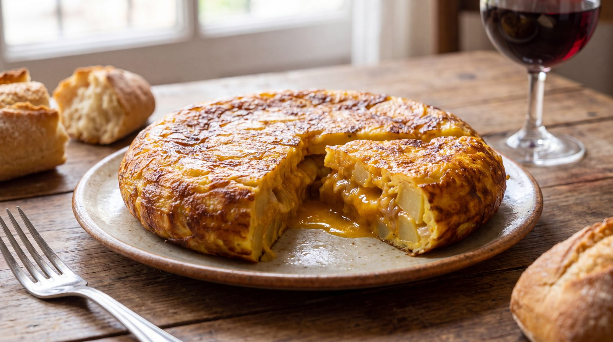

Tortilla de patatas jugosa, paso a paso

Pocas cosas unen y dividen tanto como la tortilla de patatas. Une porque está en todas las cocinas de España, de la nevera del estudiante al menú del restaurante. Y divide por dos cuestiones eternas: con cebolla o sin ella, y cuajada o poco hecha. Aquí defendemos la versión jugosa, con cebolla pochada despacio, pero la receta funciona igual si prefieres prescindir de ella.
La clave está en la patata y en la paciencia. La patata no se fríe, se confita: a fuego suave, en abundante aceite, hasta que queda tierna sin dorarse. Así suelta su almidón y liga después con el huevo. La cebolla se cocina en paralelo, muy despacio, hasta que se vuelve dulce y casi transparente. Ninguno de los dos pasos admite prisas.
El punto final es cuestión de gusto, pero el truco universal es el reposo: una vez mezcladas las patatas con el huevo batido, se deja reposar la mezcla cinco minutos antes de cuajarla. La tortilla se hace a fuego medio, se le da la vuelta con un plato y se termina al punto que más te guste. Por dentro debe quedar cremosa, nunca seca.
| Ingrediente | Cantidad |
|---|---|
| Patatas | 600 g |
| Huevos | 6 unidades |
| Cebolla | 1 grande |
| Aceite de oliva virgen extra | para confitar |
| Sal | al gusto |
Preparación
- Pela y corta las patatas en láminas finas; confítalas a fuego suave en aceite.
- Pocha la cebolla aparte, muy despacio, hasta que quede dulce y dorada.
- Escurre bien patatas y cebolla y mézclalas con los huevos batidos y sal.
- Deja reposar la mezcla cinco minutos para que ligue.
- Cuaja a fuego medio, da la vuelta con un plato y termina al punto deseado.
Galería
Toca cualquier foto para verla a pantalla completa.